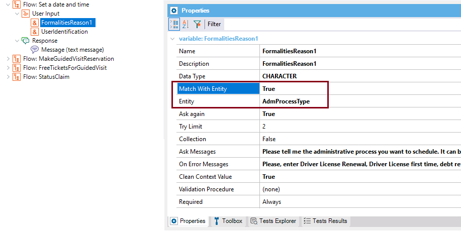
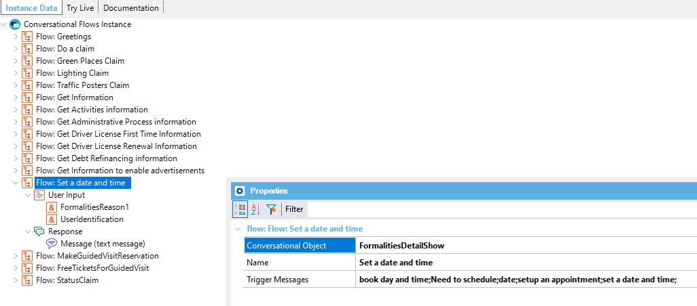
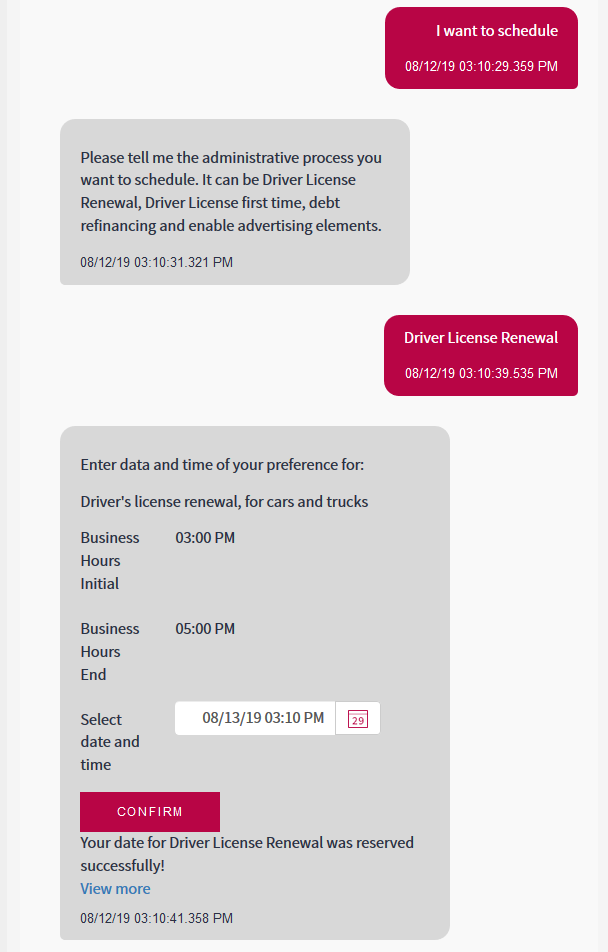

Similarly to the Make a demand Flow and Get Information Flow; in this case, you can define a flow where the user is asked to enter for which type of formality he is making an appointment. This is represented with a User Input that matches with an entity in the Provider.  Then, a Conversational Object leads to the final selection where the user determines date and time of the appointment.   |
| Backlinks |
| Toc:Chatbots in GeneXus |